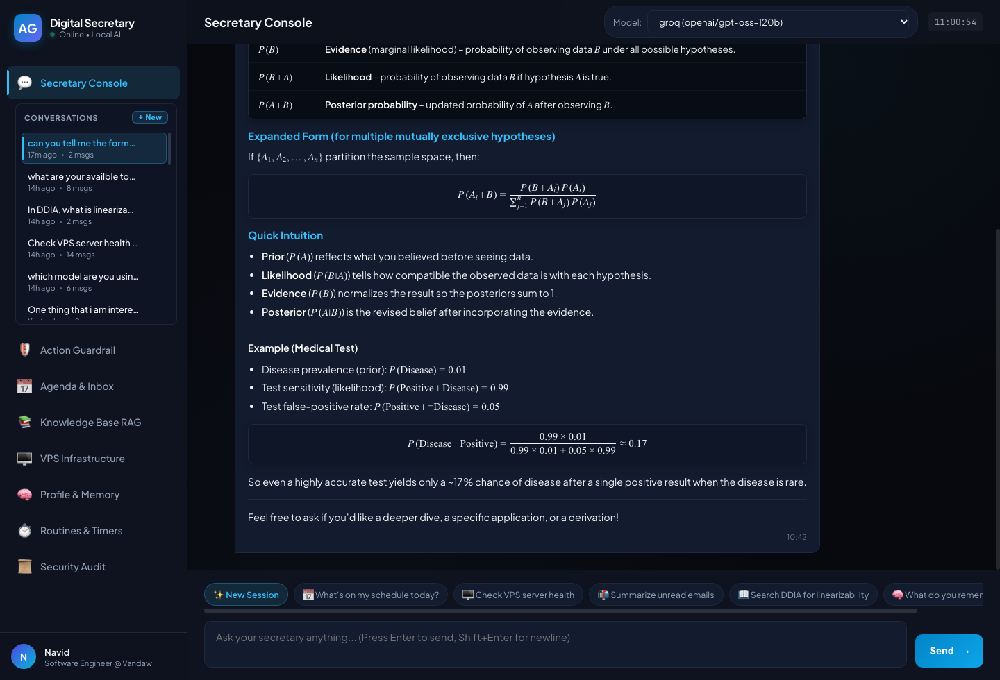

Turn Claude, Cursor, and agentic LLMs into safe Linux administrators. Rehearse PostgreSQL & Odoo migrations in disposable Docker sandboxes, orchestrate zero-downtime GitLab deploys, search dense knowledge bases, and triage Telegram chats with strict approval gates.
Select a scenario below to inspect the MCP tool execution, parameters, and structured JSON-RPC responses.
A dedicated full-stack console built for high-level operations. Complete with real-time SSE streaming, LaTeX math formula rendering, persistent sidebar chats, and live memory inspection.

Renders probability distributions, Bayes' Theorem, algorithmic complexities, and financial statistics flawlessly in chat threads.
Effortlessly switch between system maintenance chats, migration reviews, and secretary briefings with full conversational memory.
Inspect verified architectural decisions, operator preferences, and procedures stored in the structured agent memory store.
Engineered from the ground up to eliminate the risks of autonomous AI agents while multiplying their capabilities.
Communicates over standard SSH using strict sudoers allowlists and rigid command templates. Eliminates arbitrary bash injection vulnerabilities. Every mutation provides a detailed dry-run preview.
Never execute migrations on live production databases. Spawns isolated, disposable Docker containers to test complex Odoo schema upgrades, computes column-level diffs, and automatically purges test copies.
Inspect branches, commits, merge requests, and tail failed CI pipeline logs with automatic token/secret redacting. Trigger verified rolling deployments with instant rollback state pointers.
Equips the AI assistant with dense vector search (Sentence Transformers + FAISS) over technical engineering books and architecture specs. Returns verbatim text snippets with exact page citations and scores.
Connects directly to your personal Telegram account via Telethon MTProto (no generic bot token limits). Scans unread client messages, drafts replies, and waits for your confirmation before sending.
Cross-client knowledge store preserving facts, architectural decisions, operator preferences, and recovery runbooks with confidence scoring, provenance tracking, and expiration policies.
Search and inspect all 44 tools exposed over MCP stdio protocol.
Unconstrained terminal access allows autonomous agents to hallucinate destructive commands or succumb to indirect prompt injections. VPS-MCP creates a zero-trust safety boundary.
rm -rf / or exfiltrating private SSH keys.
confirm=false): Mutating actions generate a detailed preview first. Real execution requires operator approval.
get_audit_log.
VPS-MCP adheres to the standard Model Context Protocol. Works out of the box with Claude Desktop, Cursor, VS Code, and custom agent harnesses.
// Claude Desktop Configuration (~/Library/Application Support/Claude/claude_desktop_config.json)
{
"mcpServers": {
"vps-mcp": {
"command": "uvx",
"args": [
"vps-mcp",
"serve",
"--config",
"/absolute/path/to/vps-mcp.toml"
]
}
}
}uvx vps-mcp serve boots directly into inspection fallback mode, exposing all 44 tools for exploration without live credentials.